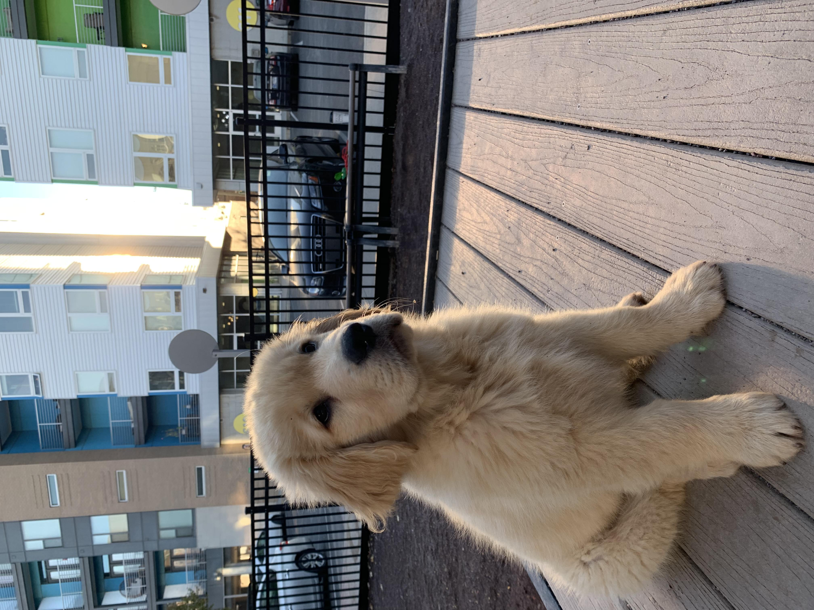

about
Indy
I live in Indianpolis, Indiana.
kevin

Hattie & I picked him up in September. He was 10 lbs. A month later he was 21 lbs.
Kevin is a large guy (and a very good boy).
I’ve recently grown a mustache. To many folks suprise, this was Hattie’s idea! I always thought my facial hair was sub-par, but I get compliments all the time. So, if you’re considering a mustache I say go for it!
This past summer I was invited to play in the Indy City Futbol league. It’s a soccer league with teams corresponding to the different Indianapolis neighborhoods. I had a ton of fun.